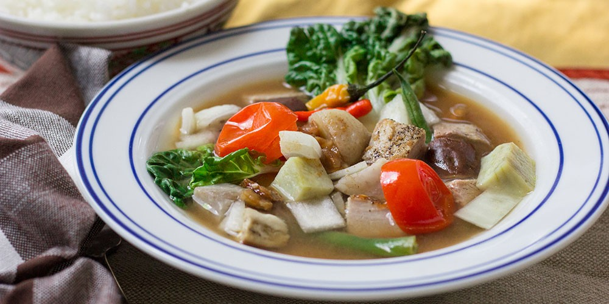

Sinigang Recipe

Description
Sinigang is a sour soup native to the Philippines. This recipe uses pork as the main ingredient. Other proteins and seafood can also be used. Beef, shrimp, fish are commonly used to cook sinigang. The chicken version, on the other hand, is called sinampalukang manok. I prefer to use either pork belly or buto-buto when cooking sinigang. The latter refers to cuts with bones intact. These are either pork neck bones, chopped spare ribs, and chopped baby back ribs. Pork shoulder and ham can also be used when cooking sinigang.
I grew-up eating pork sinigang at least once a week with a saucer of fish sauce and crushed siling labuyo on the side as my dipping sauce. During rainy days, I enjoy my sinigang meal with rice and a few pieces of fried tuyo. These are small fish that were salted and dried under the sun. It is a good combination as far as I am concerned.
Ingredients
- 2 1/2 ounces wet tamarind paste
- 3 ounces shallot
- 1 1/2 ounces garlic
- 1 1/2 ounces fresh ginger
- 1 ounce fresh galangal
- 1 ounce chopped fresh lemongrass
- 1/2 ounce raw candlenuts or raw macadamias
- 1 tablespoon ground coriander
- 1/2 tablespoon white pepper
- 1 teaspoon ground turmeric
- 1/2 cup coconut oil
- Four 7-ounce cod fillets, skinless
- 24 raw medium tail-on shrimp, peeled and deveined
- 3 1/2 ounces sliced red pepper
- 3 1/2 ounces sliced yellow onion
- 6 tablespoons sugar
- 4 tablespoons gluten-free chicken base, or to taste
- 12 cherry tomatoes, halved
- 2 scallions, cut into 1/4-inch pieces
- 8 good sprigs Thai basil
- Store-bought Asian fried red onions, for topping
Steps
- Blend tamarind and 8 cups water in a blender and set aside.
- Blend the shallot, garlic, ginger, galangal, lemongrass, candlenuts, coriander, white pepper, turmeric and 1 cup water in a blender until smooth and set aside.
- Heat coconut oil in a stew pan at medium heat and add shallot mixture. Simmer for approximately 2 minutes.
- Add cod fillets to pan. Cook for 1 minute, then add the tamarind water and allow to cook approximately 10 minutes.
- Add the shrimp, red pepper, onion, sugar, chicken base, tomatoes and scallions to the boiling broth in the pan and simmer until shrimp is cooked, 2 to 3 minutes. Transfer to a serving dish and garnish with fresh Thai basil and fried onion on the top.
THIS INFORMATION WASN'T MADE BY ME BUT WAS SOURCED FROM FOOD NETWORK AND PANLASANG PINOY